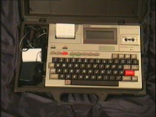
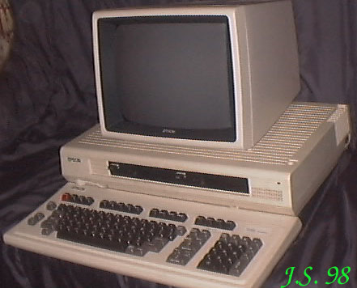

EPSONW czasie jednego z pobytów w sklepie Pol-Can przy ul. Białostockiej w Warszawie zauważyłem urządzenie podobne do PC-ta. Napis na płycie czołowej: EPSON, z tyłu: QX10. Kupiłem za grosze. Ponieważ nie było do tego klawiatury - w pierwszej chwili chciałem przeznaczyć toto na części (ładne płaskie napędy 360kB). Po jakimś czasie znalazlem w tymże sklepie nowiuteńki monitor. Klawiatury nie było. Po upływie ok 6 miesięcy w stosie pecetowych klawiatur ujrzałem... nowiuteńką, fabrycznie opakowaną klawiaturę. Miałem już komplet! Nareszcie mogłem włączyć ten komputer! Jakież jednak było moje rozczarowanie, gdy na ekranie pojawił się napis "INSERT DISK". Po trzech latach poszukiwań odezwał się w sieci gość, który pracował w jakiejś filii Epsona w Szkocji i miał do QX10 oprogramowanie, ubożuchne, ale to już coś. Po kilku dniach sprzęt już działał. Co znaczy cierpliwość kolekcjonera!HX-20 Konstrukcja z 1982r. Jest to jeden z pierwszych laptopów. Kupiłem go na giełdzie przy ul. Wolumen w Warszawie 3 grudnia 2000r. Marzyłem o nim od dawna. W sklepie internetowym kupiłem tasiemkę i rolkę papieru do drukarki. Całość w niebrzydkiej walizeczce.Procesor 2 X Hitachi 6301 /0,6MHzRAM 16kB (8 X 2kB static RAM)ROM 32kB z możliwością rozszerzenia do 40kBProcesor graficzny - brakRozdzielczość maksymalna 32 x 120.Grafika 62 znaki semigraficzneWbudowany wyświetlacz LCDPorty: Serial, RS232, Light Pen, magnetofon (EAR, MIC), Expansion (40pin)Zewnętrzne peryferia (FDD, magnetofon,drukarka, monitor) dołączane do portu ExpansionDźwięk: wbudowany głośnikQX 10 Procesor Z80 / 3,9936MHz.RAM 192kBROM 2kB Boot + 4kB generator znakówProcesor graficzny uPD7220 (współpracuje z osobną pamięcią 128kB).Rozdzielczość maksymalna ?Grafika: ?Tekst: 80 kolumn 25 liniach.Dedykowany 12" monitor monochromatyczny (zielony).Porty: RS232, Printer, Light Pen i 5 slotów na karty rozszerzeń.Urządzenia peryferyjne: Wbudowane 2 napędy FDD 5,25" (Epson SD 321). Drukarka, Light Pen.Dźwięk: wbudowany głośnik. |